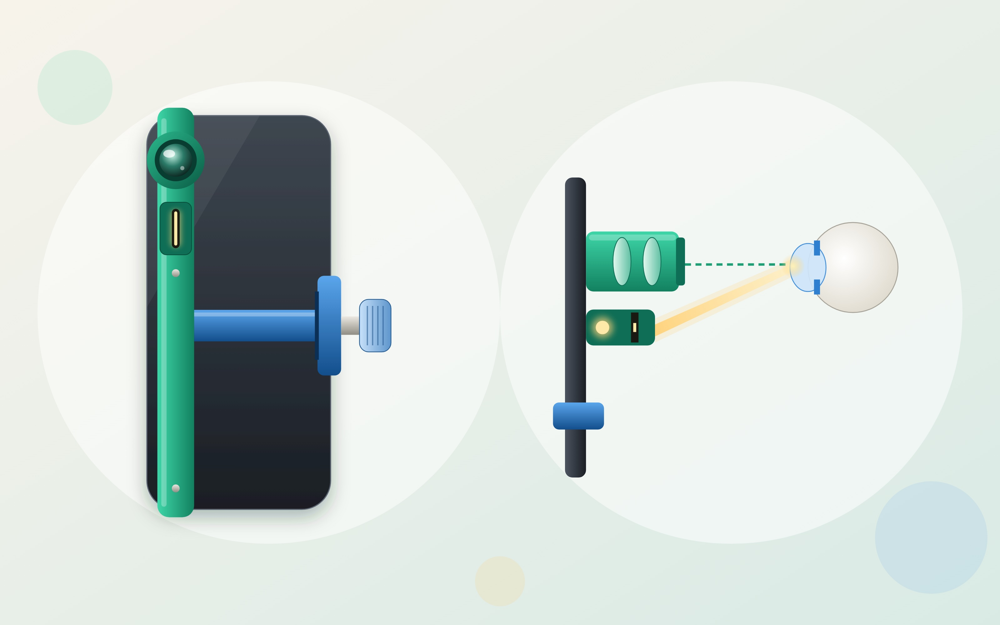

Service designer and UX strategist
I help teams find the right problem before they design the solution.
Research, discovery and solution design for enterprise technology, digital platforms, and consumer experiences.
See my workSelected work
-
Discovery Workshop . Service Design
Supply Chain Platform Discovery
Exploring opportunities to bridge gaps across the supply chain lifecycle by uncovering fragmented workflows, aligning stakeholder needs, and establishing a unified source of information across processes.
-

Mobile App . Product Design
Camera Compliance App
Simplifying camera compliance through location-triggered notifications that remind users to disable their cameras in restricted areas.
-

iOS App . Product Design
Remote Eye Screening
Transforming a mobile device into an intuitive eye-screening tool through improved image quality and a guided capture experience.
-

UX Design . AR/VR
Virtual Digital Innovation Lab
Reimagining lab visits to bridge the gap between stakeholders and teams working remotely during COVID-19.
Approach
Listen, then reframe
I dig past the brief to find the real problem, users, and business needs, then frame a sharper problem to solve.
Facilitate, don't dictate
I bring users and stakeholders into the room as the experts, and make it safe enough for them to be heard and focus on solving.
Turn insights into solutions
Insights become first-draft solutions, carried through prototyping, testing, and handoff to the finish.
Contact
Want to talk about a role or a project? Send me a message.
your-email@example.com